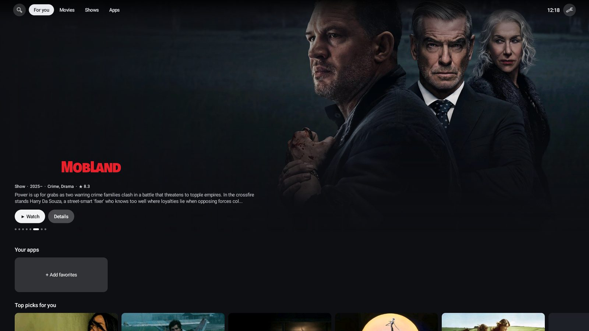
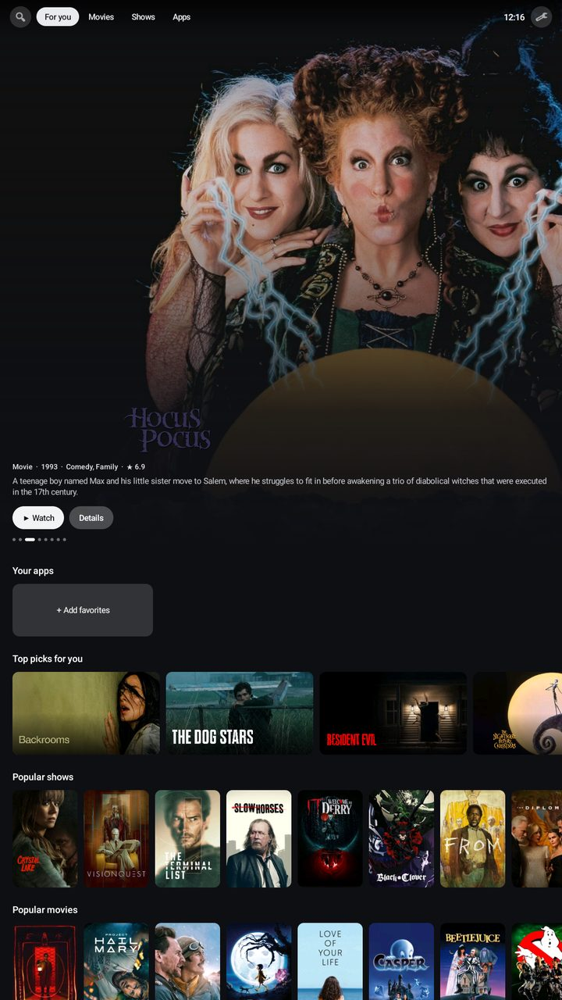
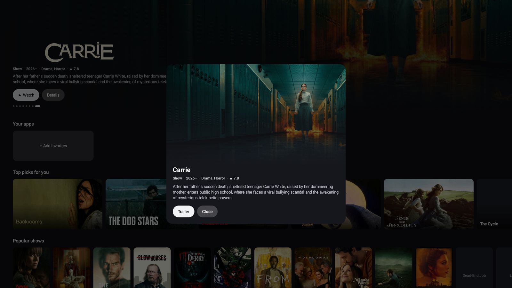
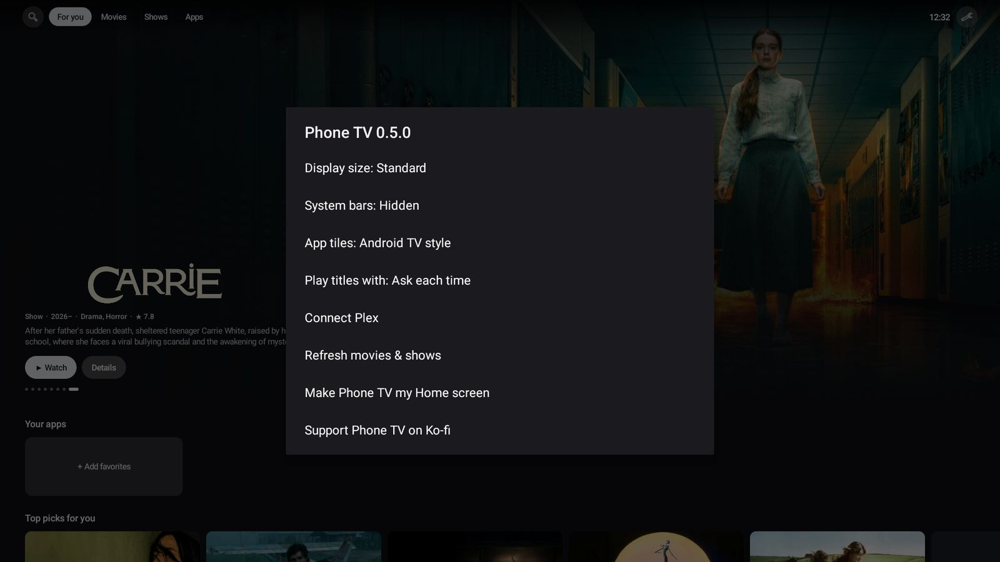

TV home screen
Featured carousel, a Your apps shelf, Movies and Shows tabs, and a top bar that slides away as you scroll.
Free · Open source · by zGenMedia
Phone TV turns the old phone in your drawer into a living-room streaming box, and gives your Windows PC a clean lean-back TV screen through BlueStacks. A TV-style home screen, your Android TV apps, Plex, and the movies and shows people are watching — in a 110 KB APK built to run cool on older hardware.

The idea
A phone from a few years ago has a fast SoC, Wi-Fi 5, Bluetooth, hardware video decoding and, often, video out over USB-C. What it's missing is a lean-back interface you can drive from the couch. Phone TV adds that, so the phone works like a Shield-style streaming box — no new hardware, no e-waste.
| Old phone + Phone TV | New streaming stick | |
|---|---|---|
| Cost | $0 | $30 – $200 |
| Screen built in | Yes — works as a portable TV | No |
| Sideload any APK | Yes | Varies by platform |
| Android TV app editions | Most install and launch | Yes |
| Home screen ads | None | Common |
| Remote included | Use any BT controller | Yes |
Features
Featured carousel, a Your apps shelf, Movies and Shows tabs, and a top bar that slides away as you scroll.
Sideloaded TV (leanback) editions are detected, shown with their real TV banners and launched with the right intent.
No more tiny phone icons. Banners are generated from each app's adaptive icon, or you can pick any image for any tile.
Link with a 4-character code. Continue watching with progress bars, plus recently added from your own server.
Tap Tune and type what you're in the mood for: asian romance, latest spanish, nigerian comedy, 90s action. The banner fills with matching titles. No menus, no account.
Optional for power users: plug in public Trakt lists, like Black cinema, Nollywood, anime or festival picks, and each one becomes a row. Casual users never see it.
Lazy-loaded art, images decoded at display size, a downsized disk cache and background-priority threads.
No accounts, analytics or ads. Plex tokens stay on the device and are excluded from backups.
Shield · Google TV · Fire TV
Stock TV home screens keep filling up with ads and sponsored rows. Phone TV runs on NVIDIA Shield, Google TV boxes and Fire TV sticks with full remote support: your apps, your picks, nothing sponsored. Hide the apps you never use, or uninstall them straight from the shelf.
Use the Downloader app or ADB. On Fire TV, first allow Install unknown apps under My Fire TV › Developer options.
It appears in your apps row. D-pad moves, OK selects, MENU opens options.
An experimental switch in Settings puts Phone TV in front of the stock launcher. Fire TV needs two ADB commands, listed in the README.
https://zgenmedia.github.io/phone-tv/downloads/PhoneTV.apk
PC & Phone
Phone TV runs in BlueStacks, the free Android emulator for Windows. Hook a PC up to the TV, go fullscreen and you get the same clean couch interface you'd get from a streaming box: big artwork, your apps on one shelf, no desktop clutter. On a phone it adapts to portrait or landscape automatically.



Download the free BlueStacks player for Windows from its official site and finish the setup.
Drag PhoneTV.apk onto the BlueStacks window, or use its Install APK button.
Open Phone TV and switch BlueStacks to fullscreen. Mouse and keyboard work out of the box, and BlueStacks supports game controllers too.
Setup
Download PhoneTV.apk on the phone and allow Install unknown apps. Samsung users: pause Auto Blocker while installing.
Press Home and pick Phone TV, or use Settings › Make Phone TV my Home screen.
Long-press any app to favorite it, reorder it or give it a custom tile. Install TV editions of your apps where they exist.
Plug into the TV and pair a controller. Settings › System bars hides everything but the content.
# sideload + set as Home from a computer (optional) $ adb install -r PhoneTV.apk $ adb shell cmd package set-home-activity \ com.kinglifer.tvlauncher/com.kinglifer.tvlauncher.MainActivity
Plex
Open Settings › Connect Plex, type the code at plex.tv/link on any device, done. Phone TV finds your server and picks the fastest route: local first, then remote, relay last. No password ever touches the app.
Not a Plex user? Titles in the catalog rows open in whichever player you choose: Stremio, a Plex search, or the trailer.
Example code. The app shows yours and updates by itself once you're linked.
Under the hood
Plain Java, framework views, zero dependencies. The whole screen is built in code and rebuilt in one pass on rotation. Art is fetched only when a card scrolls near the viewport, decoded straight to display size and cached on disk as a ~40 KB JPEG.
$ git clone https://github.com/zGenMedia/phone-tv.git $ cd phone-tv && ./gradlew assembleRelease
Changelog
FAQ
No. Google's TV software only runs on certified TV hardware. Phone TV is an independent launcher that recreates the TV experience on a phone and runs the Android TV editions of apps you install.
Yes, from v0.9.0. Sideload the APK and open Phone TV from your apps row; it's built for the remote. TV platforms don't let you pick a different Home app, so by default it runs as an app. An optional, experimental setting can put it in front of the stock home screen (Fire TV needs ADB for that step).
Yes. Install the free BlueStacks emulator, install PhoneTV.apk into it and open Phone TV. In fullscreen your PC gets a clean, lean-back TV interface for the apps you install in BlueStacks.
Any Android phone, tablet or TV box on Android 7.1 or newer (Fire OS 6+). It was built to run cool on older, low-memory hardware.
Most TV (leanback) editions install on phones, and Phone TV launches them correctly. Some expect a remote or lock to landscape — a Bluetooth controller or air mouse fixes both.
A USB-C to HDMI adapter if your phone supports DisplayPort Alt Mode, an MHL adapter on older models, or wireless Cast, Smart View or Miracast.
The open Cinemeta catalog — the same metadata Stremio uses — with no API key or account. Linked Plex servers add your own library. Phone TV doesn't host or stream any content itself.
Yes. Tap Tune on the banner and type two or three words, like “asian romance”, “latest spanish”, “nigerian comedy” or “korean horror”. Phone TV understands languages, countries, genres and years, and fills the banner with matching titles. Tap it again and choose Back to trending to reset.
Yes, if you're comfortable with an API key. Settings › Trakt lists (advanced) takes your free Trakt Client ID and up to five public list links, and shows each list as a row. It's a simple way to put Black cinema, international film or any niche you love front and center. Leave it off and nothing changes.
From v0.8.0, Phone TV checks for new versions by itself, downloads them in the background and shows an Update ready card. One tap installs it over the top, keeping your favorites and settings. Android asks once to allow Phone TV to install updates.
Yes — open source (GPL-3.0), no ads, no accounts, no tracking. If it saved you buying a streaming box, a coffee on Ko-fi keeps development going.
Support
Phone TV is free and always will be. Tips go straight into new features and testing on more devices.